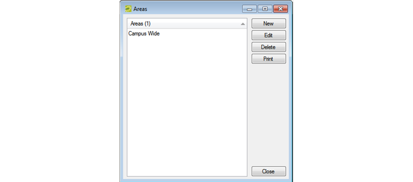
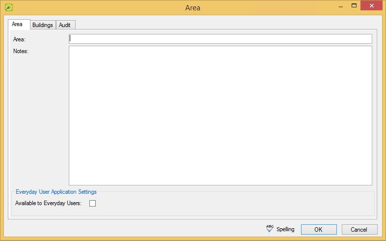

Configure Areas
An area is a particular region of indefinite boundary that is used to group buildings, for example, Southeast Region, Campus Wide, Training Sites, and so on. You can use an area as search criteria in and , in reporting, and so on. When you configure an area, you must specify the buildings that are to be included in the area.
Note: You can configure areas only in EMS Enterprise. You cannot configure areas in EMS Professional.
- On the menu bar, click Configuration > Facilities > Areas. The Areas window opens. This window lists all the areas that are currently configured in your database.

- Click New. The Area dialog box opens. The Area tab is the active tab.

Tips: In the Area field, enter a name or description for the new area, for example, Southeast Region.The area can be a maximum of 50 characters, including spaces.
In the Notes field, you can enter additional information that is pertinent for the area.
For users to be able to see and filter by this area, select the Available to Everyday Users checkbox.
- Open the Buildings tab, and on the Available list, select the building,(CTRL-click to select multiple buildings) you want included in the Area, and then Move to the (>) Selected list.

Tip: You can click Spelling to spell-check the area description before you save the area.
- Click OK. The Area dialog box closes. You return to the Areas window with the newly configured area automatically selected.